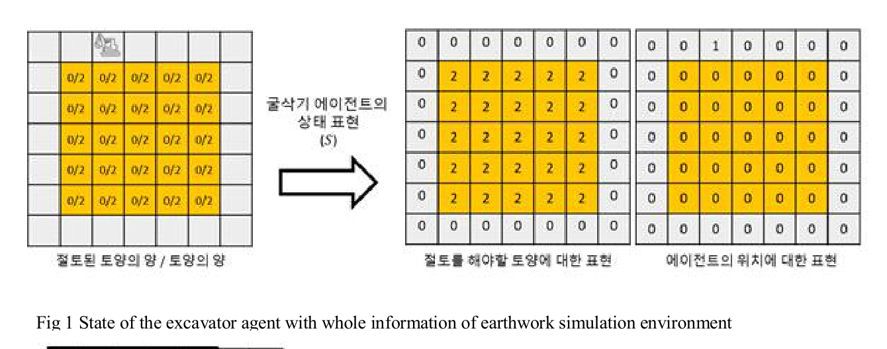
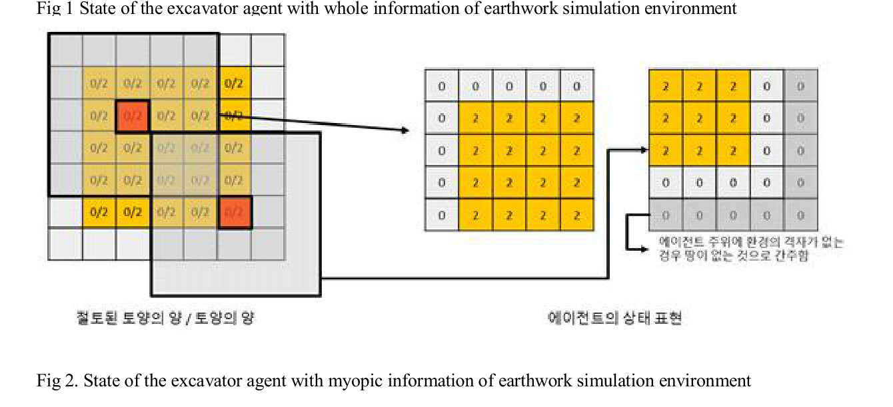
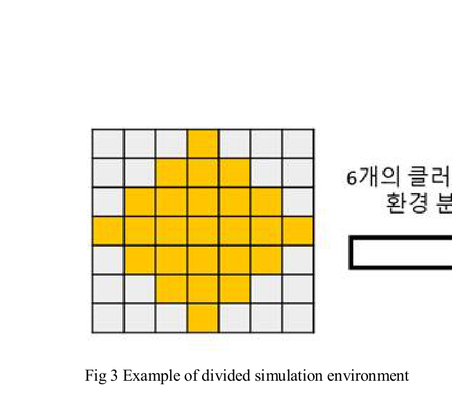
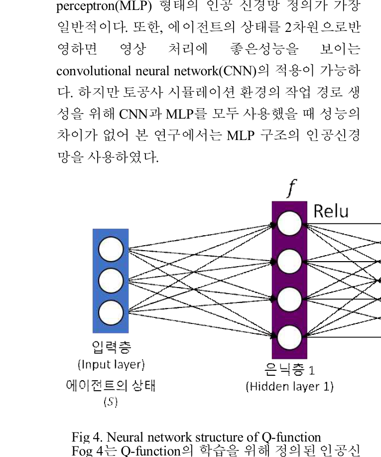
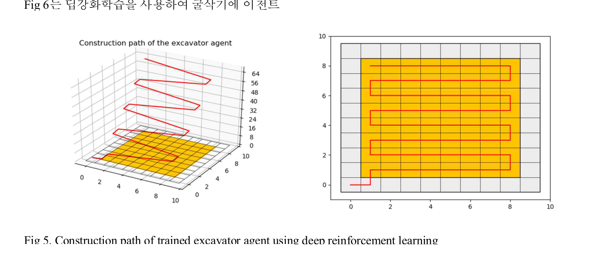
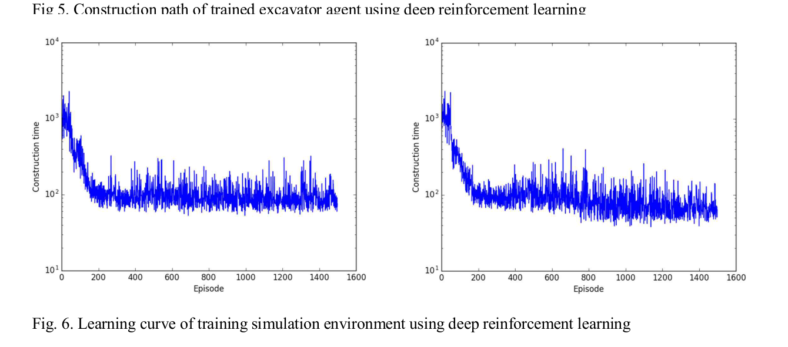

Korea Advanced Institute of Science and Technology2018#066학습·RL·IL·VLA학술논문
강화학습을 활용한 터파기 경로 생성
Route Generation for Earth Moving with Reinforcement Learning
Mingi Ji, Kyungwoo Song, Seongcheol Woo, Jinkyoo Park, Il-Chul Moon
한줄 요약 — 2018 한국자동차공학회 추계학술대회 논문으로, 단일 굴삭기의 상하좌우 이동과 굴착을 29차원 국소 상태로 압축해 Q-learning과 Double DQN을 비교하고, 불규칙 결손 토양과 미학습 10×10 지형에서도 폐루프 절토 순서를 생성해 환경 변화에 대한 경로계획 전이 가능성을 평가한 연구다.
1.연구 배경 및 동기
매일 달라지는 절토 현장을 하나의 정책으로 계획하기
토공사는 다수 건설공정의 선행 작업이며 장비 이동 순서가 기간과 비용에 직접 영향을 준다. 기존 연구는 선형·정수계획, CPM, 유전알고리즘, 인공신경망 기반 자원 예측과 이산사건 시뮬레이션으로 일정과 토량 배분을 최적화해 왔다. 그러나 토양의 위치와 잔량, 장비 위치를 모두 상태로 표현하면 격자 크기가 조금만 커져도 경우의 수가 급증하고, 특정 크기에서 학습한 정책의 입력 차원도 다른 현장에 그대로 맞지 않는다. 논문은 이 조합 폭발과 환경 크기 종속성을 자율 토공 공정계획의 핵심 병목으로 본다.
저자들은 2차원 격자에서 굴삭기 한 대가 상하좌우로 이동하고 토양을 절토하는 문제로 범위를 제한한다. 트럭과 다짐기는 굴삭기 작업 결과에 크게 종속되므로 규칙 기반 계획이 가능하다는 가정 아래 학습 대상에서 제외한다. 이 선택은 실제 장비 협업을 단순화하지만, 한 번 학습한 굴삭기 정책을 크기와 토양 배치가 다른 환경에 재사용할 수 있는지 분명하게 검증하게 해 준다. 연구의 초점은 버킷의 연속 관절궤적이나 토양력 제어가 아니라 격자 수준에서 어느 셀로 이동해 어떤 순서로 절토할지를 정하는 상위 공정 경로다.

원문 Figure 1 · PDF p.3 — Fig 1 State of the excavator agent with whole information of earthwork simulation environment
선행 연구의 한계
전체 토양격자와 장비 위치를 직접 상태로 사용하면 크기 7 예시에서 토양 배치와 49개 위치가 결합되어 상태공간이 약 4×10^13개가 된다.
전체 지도 크기에 맞춘 상태벡터는 현장 크기가 바뀔 때 입력 차원도 달라져 학습 정책을 다른 환경에 재사용하기 어렵다.
표형 Q-learning은 처음 만난 상태·행동 조합의 값을 새로 학습해야 하므로 토양 결손이나 배치 변화가 시작될 때 행동 수가 급격히 증가한다.
기존 수리계획과 휴리스틱 시뮬레이션은 매일 달라지는 토양 배치를 하나의 재사용 가능한 정책으로 흡수하기 어렵다.
이 연구의 기여
굴삭기 주변 5×5 토양정보와 방향 단서를 결합한 29차원 국소 상태를 정의해 전체 지도 상태의 조합 폭발을 줄였다.
동일한 공정 문제에서 표형 Q-learning과 MLP 기반 Double DQN을 비교해 함수근사의 환경 변화 대응 효과를 분석했다.
학습 후반에 토양 셀을 확률적으로 제거해 정사각형 외 형상과 결손 토양을 경험시키는 훈련 절차를 제안했다.
미학습 환경을 직사각형 구역으로 분할하고 하나의 학습 정책으로 새로운 크기의 경로를 생성했다.
2.방법론 및 시스템 구성
환경은 절토 대상 토양과 굴삭기 에이전트로 구성된 2차원 격자다. 에이전트는 상·하·좌·우 이동과 절토 행동을 수행하며 모든 대상 토양을 절토하면 에피소드가 끝난다. 전체 격자를 평탄화한 상태 대신 굴삭기 주변의 근시안적 정보를 사용한다. 신경망 입력은 29차원이며 국소 5×5 정보와 네 방향 단서로 구성된 고정 길이 표현이다. 지도 전체 크기와 무관한 입력이므로 훈련에 사용한 격자와 다른 환경에서도 같은 Q함수를 호출할 수 있다.
표형 Q-learning은 각 상태·행동 쌍을 직접 저장하고 심층 강화학습은 Q값을 MLP로 근사한다. 저자들은 CNN과 MLP를 모두 시험했으나 공정 경로 생성 성능 차이가 없었다고 설명하고 단순한 MLP를 채택한다. 네트워크는 29차원 입력, 각각 200뉴런인 두 은닉층과 행동별 Q값 출력층으로 구성되며 ReLU를 사용한다. Double DQN은 최근 전이 200,000개를 replay memory에 보관하고 16행동마다 128개 전이를 표본화한다. 새로운 환경은 직사각형 클러스터로 분할해 훈련 때 본 부분문제로 바꾼다.
처리 파이프라인
1
격자 토공 환경 구성
토양 잔량과 굴삭기 위치를 격자에 배치하고 굴삭기가 상하좌우 이동 또는 절토를 선택하게 한다. 모든 토양이 절토되면 에피소드를 종료한다.
2
지도 독립 국소 상태 생성
굴삭기 주변 5×5 토양정보와 주변 방향 단서를 고정 길이 29차원 벡터로 변환해 전체 지도 크기를 입력에서 제거한다.
3
Q함수 학습
표형 Q-learning과 200뉴런 은닉층 두 개의 Double DQN을 같은 문제에 적용하고 replay memory를 이용해 상관된 표본과 Q값 과대추정을 줄인다.
4
토양 형상 무작위화
토양 셀을 비우는 확률을 0에서 0.4까지 바꾸고 초기 750에피소드 뒤 결손을 도입해 비정형 형상 대응을 학습시킨다.
5
미학습 환경 분할과 실행
새 환경을 직사각형 클러스터로 나눈 뒤 학습 정책을 각 구역에 반복 적용해 전체 절토 경로를 합성한다.
원문 수식과 의미

원문 Figure 2 · PDF p.3 — Fig 2. State of the excavator agent with myopic information of earthwork simulation environment

원문 Figure 3 · PDF p.4 — Fig 3 Example of divided simulation environment

원문 Figure 4 · PDF p.4 — Fig 4. Neural network structure of Q-function
3.핵심 기술
29차원 근시안적 상태 표현
핵심은 전체 지도의 절대 배치가 아니라 현재 굴삭기 주변에서 다음 행동에 필요한 정보만 남기는 것이다. 크기 7 환경 전체를 상태로 쓰면 토양량 조합과 49개 위치가 결합되어 약 4×10^13개 상태가 되지만 국소 상태는 지도 크기와 무관한 29차원으로 고정된다.
굴삭기가 큰 현장의 어느 위치에 있더라도 주변 토양 패턴이 같으면 같은 행동가치를 재사용하므로 미학습 격자에도 정책을 적용할 수 있다. 반대로 전역 목표 방향이나 구역 간 이동은 국소 관측만으로 정하기 어려워 환경 분할 절차가 이를 보완한다.
국소 5×5 토양 패턴과 네 방향 단서를 사용한다.
입력 차원이 29로 고정되어 서로 다른 격자 크기에 동일한 신경망을 적용한다.
장거리 의존성과 구역 방문순서는 직사각형 분할에 맡긴다.
Double DQN 기반 Q함수 근사
표형 Q-learning은 방문하지 않은 상태마다 새 값을 만들어야 하지만 MLP는 유사한 국소 패턴 사이에서 Q값을 일반화한다. 그래서 훈련 도중 무작위 결손 토양이 등장해도 심층 정책의 행동 수 변동은 표형 Q-learning보다 작게 유지된다.
Double DQN, replay memory와 minibatch 갱신은 상관된 전이로 인한 불안정과 Q값 과대추정을 줄인다. CNN도 비교했으나 격자 경로 문제에서 MLP와 뚜렷한 성능 차이가 없어 29차원 벡터를 직접 처리하는 MLP를 선택했다.
은닉층 두 개에 각각 200뉴런과 ReLU를 사용한다.
최근 전이 200,000개를 저장하고 16행동마다 128개를 표본화한다.
CNN 대비 이점이 없어 MLP를 채택했다.
직사각형 분할을 이용한 환경 전이
훈련 환경과 다른 크기의 현장을 한 번에 해결하지 않고 직사각형 클러스터로 나눈다. 각 클러스터는 훈련 시 사용한 작업구역과 닮도록 구성되며 국소 정책이 처리할 수 있는 작업단위가 된다.
이 분할은 전역 경로 최적성을 신경망 하나에 맡기지 않고 전역 구조와 지역 행동을 분리한다. 다만 클러스터 순서와 경계 통과 비용은 별도 최적화하지 않아 복잡한 장애물이나 다중 장비 환경에는 상위 계획기가 더 필요하다.
비정형 토양 영역을 직사각형 클러스터로 나눈다.
학습 정책을 부분환경에서 반복 사용한다.
전역 지도 크기 변화와 국소 정책 입력 차원을 분리한다.
4.실험 결과
실험 환경·장비·데이터
2차원 격자에서 이동과 절토를 수행하는 단일 굴삭기 에이전트
29차원 입력과 각 200뉴런인 두 은닉층
토양 결손확률 p=0, 0.1, 0.2, 0.3, 0.4
미학습 10×10 환경
실험 프로토콜
각 알고리즘과 결손확률 조건에서 1,500에피소드를 학습한다.
초기 750에피소드는 결손 없이 학습한 뒤 토양 셀 제거를 시작한다.
Double DQN은 16행동마다 128개 전이를 표본화한다.
완료 행동 수의 변동과 미학습 환경 경로를 비교한다.
비교 기준
표형 Q-learning
MLP 기반 Double DQN
신경망 선택 단계의 CNN
평가 지표
에피소드 완료 행동 수
결손 도입 시 행동 수 급증 여부
미학습 10×10 환경 경로 생성
토양 형상 변화에 대한 안정성

원문 Figure 5 · PDF p.5 — Fig 5. Construction path of trained excavator agent using deep reinforcement learning

원문 Figure 6 · PDF p.5 — Fig. 6. Learning curve of training simulation environment using deep reinforcement learning
핵심 결과 해석
훈련 환경에서는 Q-learning과 심층 강화학습 모두 최적 계획에 도달했다. 그러나 750번째 에피소드부터 임의 결손 토양이 생기자 표형 Q-learning은 처음 보는 상태·행동 값을 새로 학습해야 해 완료 행동 수가 급격히 증가했다. 반면 Double DQN의 p=0과 p=0.4 학습곡선은 변동성 차이가 크지 않았고 결손 도입 시점에도 뚜렷한 단절이 나타나지 않았다. 저자들은 신경망이 기존 경험으로 미경험 상태의 Q값을 근사하기 때문이라고 해석한다.
학습된 심층 정책은 훈련에 직접 사용하지 않은 10×10 환경에서도 절토 경로를 만들었다. 2D·3D 경로는 외곽에서 내부를 반복 주행하며 토양을 제거한다. 다만 논문은 경로 길이의 평균·표준편차나 수리 최적해 대비 비율을 제공하지 않는다. 따라서 정량적 우월성은 상태공간 감소와 학습 설정으로 한정하고 최종 경로 품질은 근최적이라는 정성 결론으로 읽어야 한다.
정량 결과
평가 항목
정량 결과
조건·맥락
원문 근거
전체 지도 상태공간 예시
약 4×10^13개
크기 7 환경의 토양 배치와 굴삭기 위치를 직접 상태화
PDF p.2
심층 Q함수 입력·은닉층
입력 29차원, 은닉층당 200뉴런
국소 상태 MLP
PDF p.4
Replay memory와 minibatch
200,000개, 16행동마다 128개
Double DQN 갱신 설정
PDF p.4
훈련 길이와 결손확률
1,500에피소드, p=0~0.4
Q-learning과 Double DQN 비교
PDF p.4
결손 도입 시점
750번째 에피소드
초기 기본정책 형성 뒤 무작위 토양 제거
PDF p.5
미학습 시험 환경
10×10 격자
학습 정책의 2D·3D 작업경로
PDF p.5
실패 사례와 경계조건
표형 Q-learning은 결손 토양 도입 뒤 완료 행동 수가 급증했다.
학습 초기부터 결손확률이 높으면 경로를 익히기 어렵다.
국소 상태만으로는 구역 간 최적 방문순서를 표현하지 못한다.
실제 유압 포화·충돌·토양력 실패는 범위 밖이다.
5.한계 및 향후 연구
현재 한계
2차원 격자로 연속 좌표와 굴착기 운동학·유압 응답을 표현하지 않는다.
깊이 1 토양만 다뤄 토질과 실제 굴착 난이도를 반영하지 않는다.
굴삭기 한 대만 학습하고 트럭·다짐기 협업을 제외한다.
10×10 결과의 최적해 대비 비율과 반복분산을 보고하지 않는다.
직사각형 분할과 방문순서의 최적성 보장이 없다.
향후 연구
다중 장비 협업과 상호작용 모델을 추가한다.
다양한 깊이·토질과 에너지 비용을 보상에 포함한다.
LiDAR elevation map과 실제 장비 위치로 계획을 갱신한다.
상위 격자 경로를 실제 버킷 궤적 및 생산성 지표와 연결한다.
6.한마디로 정리
핵심 방법은?
29차원 국소 상태, MLP Double DQN과 직사각형 환경 분할을 결합했다.
핵심 결과는?
표형 Q-learning보다 결손 토양에 안정적이며 미학습 10×10 격자에서도 경로를 만들었다.
이 연구는 버킷 관절이나 끝단의 연속 궤적을 만드는 TD3·MPC·DMP 연구보다 상위 계층에 있다. 본 정책의 격자 경로가 절토 셀과 순서를 고르면 각 셀의 실제 동작은 힘 적응 DMP나 제약 MPC가 수행하는 계층형 구조가 자연스럽다.
같은 KAIST 계열의 ‘다양한 환경에서의 절토 공정 계획’은 표형 Q-learning과 대형 정사각 격자 전이를 선행적으로 보였고, 본 논문은 Double DQN·결손확률 훈련·직사각형 분할을 추가한다. ‘딥러닝 기반 토목 공정 계획’은 트럭까지 포함하므로 단일 장비 일반화와 이종 장비 협업으로 구분해야 한다.
격자 셀을 버킷 진입점·깊이·배토 위치로 변환해 저수준 계획기와 연결할 수 있다.
국소 상태에 elevation·토질·굴착가능성·자세안전도를 추가할 수 있다.
구역 순서 최적화는 별도 스케줄러가 담당해야 한다.
고유 기여는 Double DQN 비교와 결손 토양 일반화다.
7.전체 그림·표
본문 핵심 위치에 배치하지 않은 원문 Figure와 Table을 원문 페이지 순서로 수록한다.